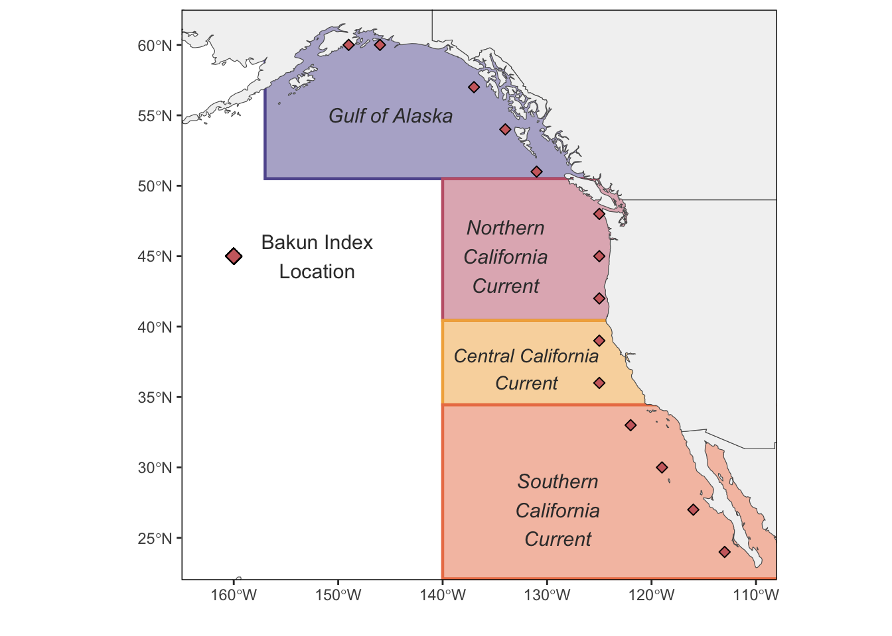

Analysis Summary
Summary Plots
Figure 1: Distribution of upwelling data relative to regional delineations.
map
Figures 2 and 3 are purely exploratory to visualize patterns in upwelling and climate indices through time. Linear trends have been added to the temporal data to examine the breakpoints. These would not be a main text figure but may be included in a supplement.
Figure 2: Trends in upwelling through time by region. Spring upwelling model appears to have a 1988/1989 shift. Evidence for another shift are less pronounced. in the Northern CC 2022 actually appears to be anomalous, where it is pulling the the trend down that would normally be positive.
`geom_smooth()` using formula = 'y ~ x'
Figure 3: Trends in climate indices through through time. Evidence for a 1988/1989 PDO shift is not evident in ONI or NPGO. NPGO appear to have a bigger change in the past decade compared to the 1989/1988 shift.
`geom_smooth()` using formula = 'y ~ x'
Objective 1
Objective 1: Identify how atmospheric (sea level pressure) and climate (SST) dynamics have changed through time across the NE Pacific with an emphasis on the marine heatwave regime.
Approach: Self organizing maps identify dominant spatial patterns in SLP and SST. The benefit of SOMs is information extraction (without prior knowledge such as a priori temporal breaks) and visualization of multidimensional data. We investigate objective 1 by:
Applying SOMs to SLP and SST data to identify how spatial patterns in SLP and SST group over time.
Compare results of analysis with global trend included and removed to identify how global trends are driving patterns.
Summary: For SST we find that the dominant spatial patterns changed around 1977. Prior to this period we observe frequent cool phase PDO patterns (node 1) and oscillations with warm phase patterns (node 5). Less pronounced and less frequent patterns were also observed, specifically nodes 2 and 3 which are predominantly associated with positive NPGO and ENSO respectively (Figure 5). Node 5 is associated with negative NPGO, nodes 1 and 2 is associated with positive NPGO and node 3 is associated with positive ENSO. After 1977, we only observe one occurrence of the strong cool phase (node 1) and instead we see more frequent occurrences of the NPGO-ENSO associated patterns, nodes 2 and 3 (18 years post 1977; 7 years prior 1977). In addition we see a change in the spatial patterns of the warm phase nodes, specifically the arrival of node 6 and the absence of node 5 since 1998. This extreme warm pattern has also persisted every year since 2014 (Figure 4). Notable, the marine heatwave node (node 6) shows no clear association with climate indices (Figure 5) with positive and negative values present for all indices. When the global trend is removed from the SST data, we observe clear oscillation to “classic” warm (node 2) and cold (node 5) spatial patterns. We do also see transitional spatial patterns (all other nodes) that are not associated with specific positive/negative climate indices but most notably, we do not see any major shifts in frequency of a given spatial pattern through time. Notably, multiple years since 2014 map onto the cold phase (nodes 1 and 2) in the absence of the global trend (Figure 6 & 7).
Similar to SST, we find two time periods of change based on the SLP SOM analysis, the first in 1977 and the second in 2000. These are fairly established break points in some atmospheric literature (see Wills et al. 2019, 2020). ENSO demonstrates a clear association with the SLP spatial patterns with nodes 1 and 2 associated with La Nina conditions and node 5 associated with El nino conditions (Figures 8 and 9). Prior to 1999 the spatial pattern associated with La Nina events was predominantly node 2 with only 5 occurrences of node 1. After 1999 the spatial SLP conditions associated with La Nina were primarily node 1 (11 occurrences). With the global trend removed we no longer observe a delineation in 2000 and we also see a much stronger association with NPI and fewer associations with other .
NOTE PDO and likely NPI datasets that are directly accessed have are detrended (likely the same for NPGO?), it may be useful to use derive PDO with the trend, but part of the utility of looking at these climate indeces is to understand how what indices that are commonly used may not fully reflect the same conditions that they have historically so I think an argument could be made for either (or both). This is likely why we observed stronger relationships between NPI-SLP and PDO-SST with the detrended SOMs
SST Analysis
Global Trend Included
Figure 4: Dominant spatial patterns in Spring (April - June) of North Pacific SST anomalies from 1940 - 2023 with the global trend included. Node 6 only occurs after 1996 and almost exclusively during the marine heat wave era. Nodes 1 and 5 only occurred before 1996.


Figure 5: Association between spatial patterns (SOM nodes) and climate indices. These plots are intended to intepret spatial patterns of the SOMs

Global Trend Removed
Figure 6: Dominant spatial patterns in Spring (April - June) of North Pacific SST anomalies from 1940 - 2023 with the global trend removed. Altogether this illustrates that the recent patterns observed during the MHW era are predominantly driven by global trends in SST and in the absence of that trend spatial patterns in SST resemble common trends observed historically, particularly nodes 5 and 2 which are a classic PDO pattern.


Figure 7: Association between spatial patterns (SOM nodes) and climate indices. These plots are intended to intepret spatial patterns of the SOMs

SLP Anlysis
Global Trend Included
Figure 8: Dominant spatial patterns in Winter (November - March) of North Pacific SLP anomalies from 1940 - 2023 with the global trend included. There are no dominant patterns through time, but spatial patterns that reflect PDO and NPGO forcing are not evident.


Figure 9: Association between spatial patterns (SOM nodes) and climate indices. These plots are intended to interpret spatial patterns of the SOMs

Global Trend Removed
Figure 10: Dominant spatial patterns in Winter (November - March) of North Pacific SLP anomalies from 1940 - 2023 with the global trend removed. Removal of the global trend uncovers more PDO (nodes 1 and 6) and NPGO (nodes 3,4,5) forcing patterns. There are not dominant forcing patterns during the marine heat wave era.


Figure 11: Association between spatial patterns (SOM nodes) and climate indices. These plots are intended to interpret spatial patterns of the SOMs

Upwelling and Atmospheric Forcing
Objective 2
Objective 2: Evaluate evidence for SST/SLP - upwelling dynamics.
SOM models indicate a change in climate and atmospheric relationships since 2000 for SLP and 2013 for SST. Particularly SST shows no association with climate indices since the marine heatwave era (node 6, Figure 5). Here we examine associations between SST, SLP and upwelling have changed on regional scales.
Approach This section includes correlation analysis to identify changes in the relationships between SST and SLP with regional upwelling indices. We apply a breakpoint analysis (1967 - 1988; 1989 - 2013; 2013 - 2022) examining regional differences (Figure 1) in associations.
Summary In the GoA, southern California Current and central California Current there is a strengthening between basin-wide SST patterns and upwelling. These spatial relationships resemble the PDO/NPGO. Notably, in the 2013 - 2022 period CCC seems to be dominated more by and NPGO - like forcing pattern compared to the two earlier eras. In contrast, the relationship between basin-wide SST patterns and upwelling dynamics in the NCC demonstrate PDO-like patterns throughout time, but show a sign reversal in the 2013-2022 period indicating SST patterns that were previously conducive to upwelling conditions actually produce downwelling conditions in the most recent era. Similarly, the GOA showed evidence of PDO dominated relationship in the earliest era,but it appears to be somewhere between a PDO-NPGO pattern during the MHW era.Altogether, the relationship between basin wide SST and upwelling has changed in the past decade which is likely due at least partially to global trends in SST (see SOM models). This, combined with the changing correlations between NPGO-PDO mean the interpretation of NPGO and PDO for upwelling conditions is also changing, and may not reflect these indices may not reflect the same ecologically important conditions that have been used to interpret climate indices in the past.
There appears to be a strengthening of the relationship between upwelling with the Aleutian low - like patterns during the marine heatwave era (Figure 12) but the direction of this relationship is regionally specific. We also know from the SOM modelling, that this time period was characterized by spatial patterns of SLP that are associated with a weak Aleutian Low and La Nina conditions. However, we do not observe distinct patterns through time for upwelling since the MHW era (Figure 2). This means we are not observing a change in SLP driving changes in upwelling, but rather increased coupling driven by SLP patterns characteristic of a weak Aleutian Low.
SST Analysis
Figure 11: Correlations (slope) between regional upwelling (regions correspond Bakun indices described on map) and sea surface temperature. These correlations are based on three time periods: 1967-1988, 1989 - 2012, 2013 - 2022. 1988 marks a shift in Aleutian low variability, and increase in Winter SST anomaly, and a change in the correlation between PDO - NPGO (see Litzow et al. 2020 PNAS). This period also marks a change in upwelling in upwelling anomaly. 2013 marks an increase in both spring and winter SST with some evidence for changed in NPGO, PDO, and ENSO but no apparent change in upwelling anomaly.

SLP Analysis
Figure 12: Correlations (slop) between spring regional upwelling (regions correspond Bakun indices described on map) and winter sea level pressure anomaly. These correlations are based on three time periods: 1967-1988, 1989 - 2012, 2013 - 2022. 1988 marks a shift in Aleutian low variability, and increase in Winter SST anomaly, and a change in the correlation between PDO - NPGO (see Litzow et al. 2020 PNAS). This period also marks a change in upwelling in upwelling anomaly. 2013 marks an increase in both spring and winter SST with some evidence for changed in NPGO, PDO, and ENSO but no apparent change in upwelling anomaly. NOTE: these are anomalies (deviation from the 1967 - 2022 mean) but are not standardized anomalies - using standardized anomalies, anomalies, and raw SLP all produce similar patterns and we can choose which one to use based on interpretability of the slope coefficient.

Upwelling and Climate Indices
Objective 3
Objective 3: Identify decoupling between upwelling and basin scale ocean indices (PDO, NPGO, ENSO, NPI) during the marine heatwave era
Approach: Bayesian linear model with region-level factors (GoA, NCC, CCC, SCC) delineated based on Figure 1 using breakpoints for 1967 - 1988; 1989 - 2013; 2014 - 2023.
Summary: PDO: PDO tends to be most associated with vertical transport and isopycnal depth in the NCC. It is also associated with source depth and density in the NCC and CCC (Figure 17). Generally, PDO is negatively associated with upwelling. Historically, we find evidence of this negative relationship historically across all of the California Current (Figure 13b) but we find a dramatic change in the relationship between upwelling and PDO in the NCC during the MHW era (Figure 13) where the the correlation switches from negative to positive. We do not find evidence for a MHW change in the other regions. This finding is in agreement with the correlation analysis, where we find a complete reversal of the slope coefficients between NCC upwelling and SST in the MHW era compared to the earlier periods (Figure 11).
NPGO: NPGO is positively associated with upwelling and is more associated with vertical transport in the SCC and source depth in the SCC and NCC (Figure 17). We find the relationship between upwelling and NPGO was similar during MHW era and the historic era (1967 - 1988) and did not differ substantially from 0 (weakly negative slope; Figure 13) indicating NPGO-upwelling not closely coupled during this period. However, the relationship was strongly coupled with a positive slope during the 1989 - 2013 period. Notably, NPGO values have been exceptionally negative during the MHW era - including the 3 most negative observations - resulting in a change in the intercept of the relationship.
ENSO: The relationship between ENSO-upwelling is similar to that of PDO-upwelling. Specifically, we find a consistent, negative relationship in the California Current, with a strengthening of that relationship in SCC and CCC consistent with the correlation analysis results. Similar to PDO, we find a reversal of the slope coefficient during the MHW era from negative to positive in NCC.
NPI: we do not find any strong relationships between NPI-upwelling. We do find a reversal of the relationship during the MHW era compared to the earliest period (1967-1988) for the GoA and NCC and a strengthening (more positive) of the association in CCC and SCC (Figure 16) consistent with the correlation analysis of SLP, but posterior distributions of the slope overlap with 0 (Figure 12). We do find a more positive intercept, consistent with an increase of index values representative of a weakening of the Aleutian Low during the MHW era.
PDO - Upwelling
Figure 13: Relationship between spring upwelling and spring PDO based on a) linear relationship b) posterior estimates for the slope and c) posterior estimates for intercept


NPGO - Upwelling
Figure 14: Relationship between upwelling and NPGO based on a) linear relationship b) posterior estimates for the slope and c) posterior estimates for intercept


ENSO - Upwelling
Figure 15: Relationship between upwelling and ENSO based on a) linear relationship b) posterior estimates for the slope and c) posterior estimates for intercept


NPI - Upwelling
Figure 16: Relationship between upwelling and NPI based on a) linear relationship b) posterior estimates for the slope and c) posterior estimates for intercept


Figure 17: Reproduced from Mike Jacox for reference
Preliminary Conclusions: Our results show distinct spatial patterns in SLP and SST since 2000 compared to the pre-2000 record with an exceptional pattern of SST from 2014 - 2022 that had not been observed prior to 1996. Spatial patterns of SLP are associated with weak Aleutian Low and La Nina conditions that have also been observed in recent years. There is evidence of non-stationary relationships between upwelling, climate indices and forcing mechanisms, particularly during the MHW era in the Northern California Current. We found that the relationship between SST-upwelling and SLP-upwelling reversed from 2013 - 2022 in the NCC. We observed similar reversals between ENSO-upwelling and PDO-upwelling in the NCC during the MHW era. We also find evidence of moderate strengthening relationships between ENSO-upwelling and PDO-upwelling in the CCC and SCC driven by changes in the SST and SLP upwelling relationships in these regions. Altogether, these results indicate changing environmental meaning of climate indices, particularly ENSO and PDO, driven by global trends in forcing mechanisms, specifically SLP and SST. Further, we show evidence of prolonged and persistent change in SLP and SST since 2000 and at least since 2014. Applications of climate indices in ecological analyses should consider their environmental and ecological meanings differ from historical interpretations during the MHW era.